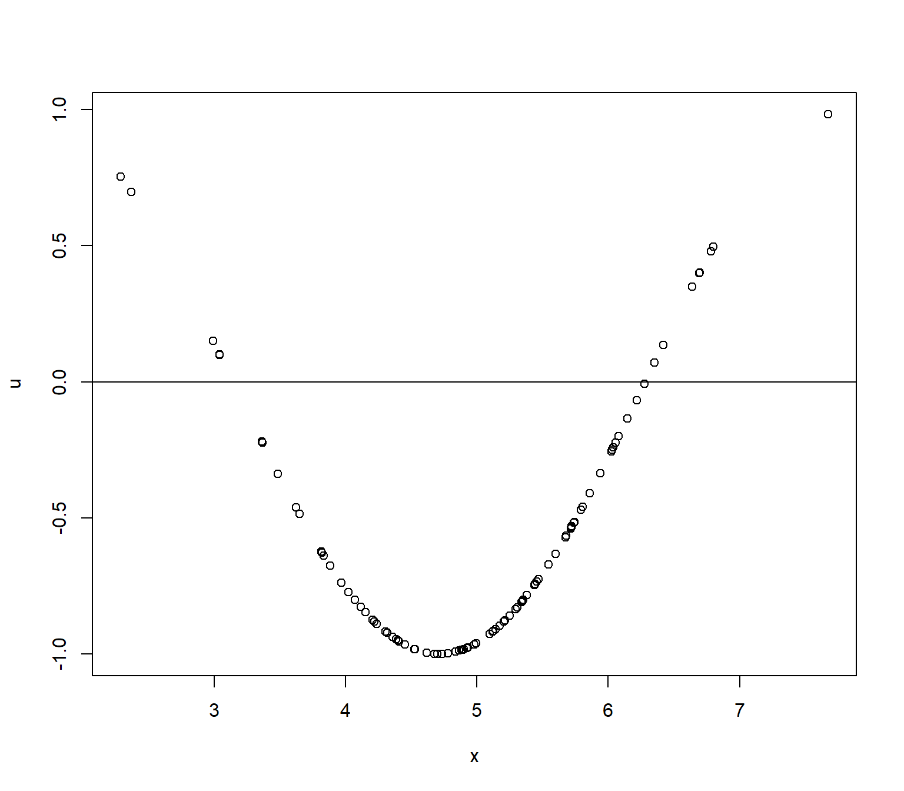

Multivariat & Dummy regression
Pertemuan 3
Metodologi penelitian
Omitted variable bias
Omitted variable bias: ketika ada variabel yang harusnya signifikan tapi kita tidak include di regresi (diomit).
Hal ini akan mengakibatkan \(\beta\) yang bias untuk variabel yang kita include.
Anda akan lihat error yang berpola.
Kita atasi dengan regresi multivariat.
Hari ini
Regresi multivariat
Regresi dummy
Regresi multivariat
\[
Y=\beta_0+\beta_1 X_1+\beta_2 X_2 +...+\beta_jX_j+\mu
\]
pada intinya, kita regresikan lebih dari 1 X untuk 1 Y.
Banyak hal di dunia ini tidak tergantung pada 1 hal.
Belajar dan nilai
Nilai UAS Metopel tidak hanya tergantung dari jam belajar per minggu, tapi juga tergantung seberapa paham mahasiswa akan statistik dan matematika.
Pemahaman math & stats diukur dengan nilai UAS math & stats.
\[
Y = \beta_0 + \beta_1 X + \beta_2 S + \mu
\]
Y = UAS Metopel ; X = jam belajar seminggu ; S = UAS Statistik.
Omitted variable bias
Jika saya tidak tau bahwa nilai UAS Statistik dapat menjadi ukuran “modal awal” mengikuti kelas metopel, maka saya akan omit variabel tersebut.
Jika ternyata variabel tersebut penting, maka meninggalkan variabel tersebut akan mengakibatkan omitted variable bias.
Kita akan bermain dengan data generated: by design, X dan S berpengaruh terhadap Y (saya tau karena saya yang bikin).
Plot tanpa S
plot (dat$ X,dat$ Y,xlab = "jam belajar" ,ylab= "nilai metopel" )abline (lm (dat$ Y~ dat$ X))

Regresi tanpa S
<- lm (data= dat,Y~ X)summary (reg1)
Call:
lm(formula = Y ~ X, data = dat)
Residuals:
Min 1Q Median 3Q Max
-22.2986 -11.4112 0.0501 10.9055 22.2082
Coefficients:
Estimate Std. Error t value Pr(>|t|)
(Intercept) 38.3547 2.3772 16.135 < 2e-16 ***
X 2.0493 0.2076 9.874 2.27e-16 ***
---
Signif. codes: 0 '***' 0.001 '**' 0.01 '*' 0.05 '.' 0.1 ' ' 1
Residual standard error: 12.17 on 98 degrees of freedom
Multiple R-squared: 0.4987, Adjusted R-squared: 0.4936
F-statistic: 97.49 on 1 and 98 DF, p-value: 2.274e-16
Plot residual tanpa S
$ u<- resid (reg1)plot (dat$ Y,dat$ u,xlab= "nilai metopel" ,ylab= "error" )abline (h= 0 ) # membuat garis horizontal di y=0
$ u<- resid (reg1)plot (dat$ X,dat$ u,xlab= "jam belajar" ,ylab= "error" )abline (h= 0 )
Error diagnostic
Dapat kita lihat bahwa OLS (Ordinary Least Square) menghasilkan rata-rata yang 0
Akan tetapi, \(\mu\) tidak terdistribusi secara random terhadap \(Y\) .
Artinya, ada variasi di error yang bisa dijelaskan oleh variabel lain.
Kabar baiknya, variabel lain ini masih independen terhadap \(X\)
Terlihat dari \(\mu\) yang kelihatan independen terhadap \(X\)
Regresi dengan S
Sekarang kita tambahkan S ke regresi kita
<- lm (data= dat,Y~ X+ S)summary (reg2)
Call:
lm(formula = Y ~ X + S, data = dat)
Residuals:
Min 1Q Median 3Q Max
-5.6677 -2.5026 0.0932 2.0725 5.3520
Coefficients:
Estimate Std. Error t value Pr(>|t|)
(Intercept) 11.13743 0.90463 12.31 <2e-16 ***
X 1.92363 0.05085 37.83 <2e-16 ***
S 0.48907 0.01246 39.27 <2e-16 ***
---
Signif. codes: 0 '***' 0.001 '**' 0.01 '*' 0.05 '.' 0.1 ' ' 1
Residual standard error: 2.975 on 97 degrees of freedom
Multiple R-squared: 0.9703, Adjusted R-squared: 0.9697
F-statistic: 1586 on 2 and 97 DF, p-value: < 2.2e-16
Plot dengan S
$ m<- resid (reg2)plot (dat$ Y,dat$ m,xlab= "nilai metopel" ,ylab= "error" )abline (h= 0 ) # membuat garis horizontal di y=0
plot (dat$ X,dat$ m,xlab= "jam belajar" ,ylab= "error" )abline (h= 0 )
\(\mu\) dan \(X\) jadi independen, dan rentang mengecil.
Kesimpulan
Selama \(\mu\) masih ada polanya terhadap \(Y\) , maka dapat kita katakan ada sesuatu di error yang masih bisa menjelaskan \(Y\) .
Rentang lebih besar, tetapi koefisien \(X_1\) masih cukup dekat dengan aslinya -> tidak bias.
hal ini karena \(X_1\) dan \(X_2\) independen.
Jika \(\mu\) berkorelasi dengan \(X_1\) , masalahnya lebih besar. Tapi menyelesaikan masalah ini ada di luar materi kita.
Menerjemahkan koefisien
\[
\hat{Y}=38.355+2.049X
\]
Jika waktu belajar \(\uparrow\) 1 jam, maka nilai UAS metopel \(\uparrow\) 2.049
misalnya satuan diukur dalam menit, \(\beta\) pasti akan \(=\frac{2.049}{60}=0.03415\)
terjemahannya: jika waktu belajar \(\uparrow\) 1 menit, nilai UAS \(\uparrow\) 0.03415.
\[
\hat{Y}=11.137+1.924X+0.489S
\]
Jika waktu belajar \(\uparrow\) 1 jam, maka nilai UAS metopel \(\uparrow\) 1.924 untuk S yang sama
No perfect multicollinearity
Dengan regresi multivariat, ada tambahan asumsi untuk OLS bisa BLUE
Multicol: di mana \(X_1\) ada hubungan linear yang sempurna dengan \(X_2\)
Contoh: pendidikan dan income orang tua.
Di dunia nyata, mungkin saja rajin belajar metopel ada korelasi positif dengan nilai UAS matematika & statistika.
No perfect multicollinearity
Hubungan yang diperbolehkan:
hubungan yang lemah
hubungan yang tidak linear
\(X_1 = \sqrt{X2} \rightarrow\) contoh hubungan tidak linear -> boleh
\(X_1=\beta_1+\beta_2 X_2+\mu \rightarrow\) contoh hubungan linear.
\(\beta_1\) kecil dan signifikansinya lemah -> boleh
Dummy variable
Bagaimana jika data kita kualitatif?
Kategorikal
kualitatif, ga ada urutan
nama, jenis kelamin, suku
Ordinal
kualitatif, ada urutan
ukuran baju, ukuran sepatu, medali
Hitung
kuantitatif, integer
nomor telepon, jumlah anak
Riil
kuantitatif, riil
PDB, ekspor impor
Dummy variable
Kita buat variabel dummy, di mana \(S=0\) jika kondisi mahasiswa tersebut sakit, dan \(S=1\) jika mahasiswa tersebut sehat pas ujian.
Beda dari sebelumnya, S di sini cuma punya 2 nilai: 1 atau 0.
Untuk observasi sakit: \(Y=\beta_0+\beta_1X+\mu\)
Untuk observasi sehat: \(Y=\beta_0+\beta_2+\beta_1X+\mu\)
\(\beta_2\) adalah beda nilai UAS antara yang sehat dan sakit untuk jam belajar yang sama.
Regresi tanpa S
<- lm (Y~ X, data= dat2)summary (reg3)
Call:
lm(formula = Y ~ X, data = dat2)
Residuals:
Min 1Q Median 3Q Max
-16.768 -10.278 -4.094 10.188 19.885
Coefficients:
Estimate Std. Error t value Pr(>|t|)
(Intercept) 21.0726 2.2608 9.321 3.61e-15 ***
X 3.2391 0.1974 16.409 < 2e-16 ***
---
Signif. codes: 0 '***' 0.001 '**' 0.01 '*' 0.05 '.' 0.1 ' ' 1
Residual standard error: 11.57 on 98 degrees of freedom
Multiple R-squared: 0.7332, Adjusted R-squared: 0.7304
F-statistic: 269.3 on 1 and 98 DF, p-value: < 2.2e-16
Plot residual tanpa S
$ u<- resid (reg3)plot (dat2$ Y,dat2$ u,xlab= "nilai metopel" ,ylab= "error" )abline (h= 0 ) # membuat garis horizontal di y=0
plot (dat2$ X,dat2$ u,xlab= "jam belajar" ,ylab= "error" )abline (h= 0 )
Plot residual tanpa S by group
ggplot (data= dat2,aes (y= u,x= Y,color= S,shape= S))+ geom_point (size= 2 )+ geom_hline (yintercept= 0 )+ theme_minimal ()
ggplot (data= dat2,aes (y= u,x= X,color= S,shape= S))+ geom_point (size= 2 )+ geom_hline (yintercept= 0 )+ theme_minimal ()
Regresi dengan S
<- lm (Y~ X+ S, data= dat2)summary (reg4)
Call:
lm(formula = Y ~ X + S, data = dat2)
Residuals:
Min 1Q Median 3Q Max
-8.2544 -4.0346 0.1816 3.8767 7.8808
Coefficients:
Estimate Std. Error t value Pr(>|t|)
(Intercept) 9.78226 0.97921 9.99 <2e-16 ***
X 3.42632 0.07547 45.40 <2e-16 ***
Ssehat 21.47210 0.89116 24.09 <2e-16 ***
---
Signif. codes: 0 '***' 0.001 '**' 0.01 '*' 0.05 '.' 0.1 ' ' 1
Residual standard error: 4.4 on 97 degrees of freedom
Multiple R-squared: 0.9618, Adjusted R-squared: 0.961
F-statistic: 1221 on 2 and 97 DF, p-value: < 2.2e-16
Plot residual dengan S
$ u<- resid (reg4)ggplot (data= dat2,aes (y= u,x= Y,color= S,shape= S))+ geom_point (size= 2 )+ geom_hline (yintercept= 0 )+ theme_minimal ()
ggplot (data= dat2,aes (y= u,x= X,color= S,shape= S))+ geom_point (size= 2 )+ geom_hline (yintercept= 0 )+ theme_minimal ()
intepretasi
\[
\hat{Y}=9.78226+3.42632X+21.47210S
\]
Jam belajar \(\uparrow\) 1 jam, nilai \(\uparrow\) 3.42632, jika kondisi kesehatan sama.
Jika jam belajar sama, kondisi sehat memiliki nilai 21.4721 poin lebih tinggi daripada yang sakit.
Sebaliknya juga bisa: kondisi sakit dapat nilai lebih rendah 21.4721 poin daripada yang sehat.
Reference group
Sangat penting untuk tau yang mana reference groupnya.
Karena kita intepretasi \(\beta_2\) sebagai beda antara yg \(S=1\) dengan reference group.
Dalam kasus kita, R memilihkan untuk kita mana yang jadi reference group
Ssehat -> berarti reference groupnya=sakit.
Regresi Sehat=0
## buat variabel baru namanya SS di mana SS=1 kalau S="sakit" $ SS<- ifelse (dat2$ S== "sakit" ,1 , 0 ) <- lm (Y~ X+ SS, data= dat2)summary (reg5)
Call:
lm(formula = Y ~ X + SS, data = dat2)
Residuals:
Min 1Q Median 3Q Max
-8.2544 -4.0346 0.1816 3.8767 7.8808
Coefficients:
Estimate Std. Error t value Pr(>|t|)
(Intercept) 31.25437 0.95805 32.62 <2e-16 ***
X 3.42632 0.07547 45.40 <2e-16 ***
SS -21.47210 0.89116 -24.09 <2e-16 ***
---
Signif. codes: 0 '***' 0.001 '**' 0.01 '*' 0.05 '.' 0.1 ' ' 1
Residual standard error: 4.4 on 97 degrees of freedom
Multiple R-squared: 0.9618, Adjusted R-squared: 0.961
F-statistic: 1221 on 2 and 97 DF, p-value: < 2.2e-16
\(\beta_1\) dan \(\beta_2\) sama persis, \(\beta_2\) negatif.
Group dengan anggota lebih dari 2?
Sangat mungkin kita punya variabel kategorikal lebih dari 2.
Kelas (Piwar 3A,3B,3C,3D), nilai akhir statistika (A,B,C,D,E).
industri (agrikultur, manufaktur, jasa), provinsi, regional.
Jika itu yang terjadi, kita harus tambahkan variabel dependen:
\[
Y=\beta_0+\beta_1X+\beta_23A+\beta_33B+\beta_43C+\mu
\]
jika mahasiswa ada di kelas 3A, berarti 3A=1, 3B=0, 3C=0
\(\beta_2\) adalah bedanya mahasiswa 3A dengan reference group.\(\beta_3\) apa? Reference groupnya siapa?
Mingdep
Reading regression table
Various data characteristics: level, log, difference and time series